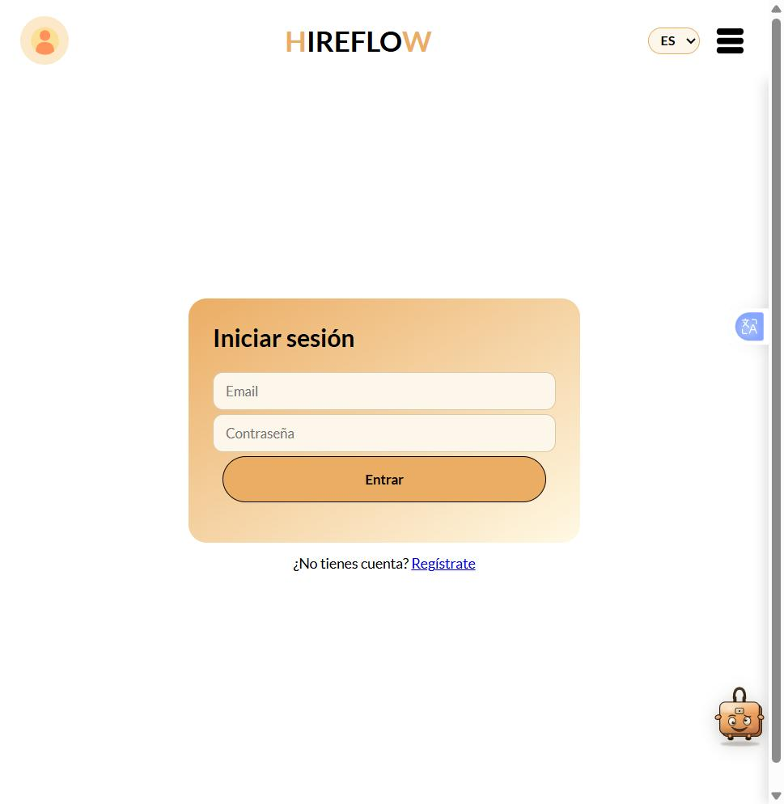
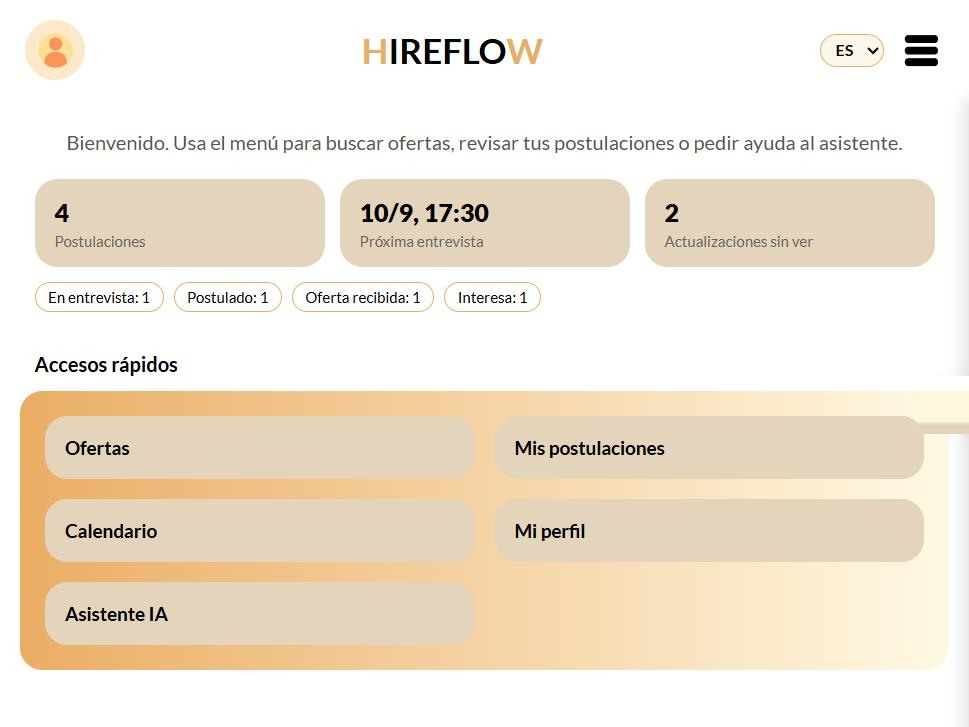
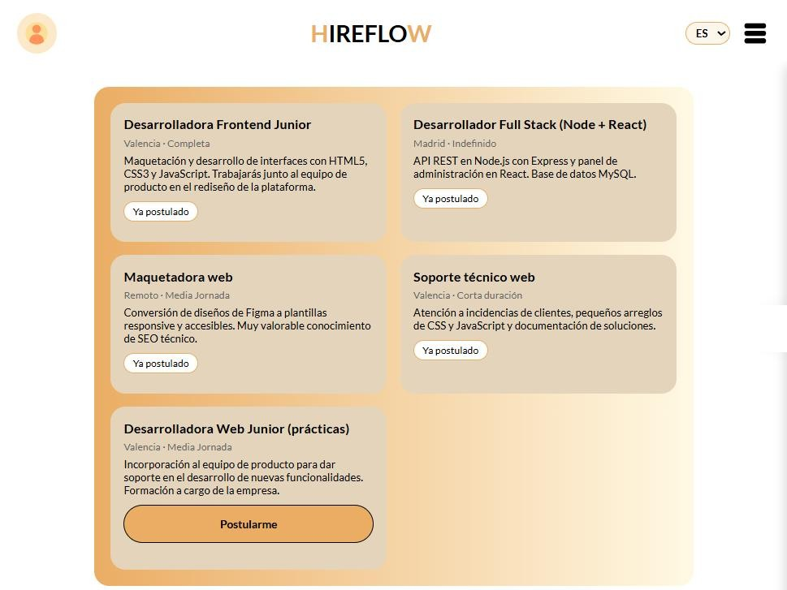
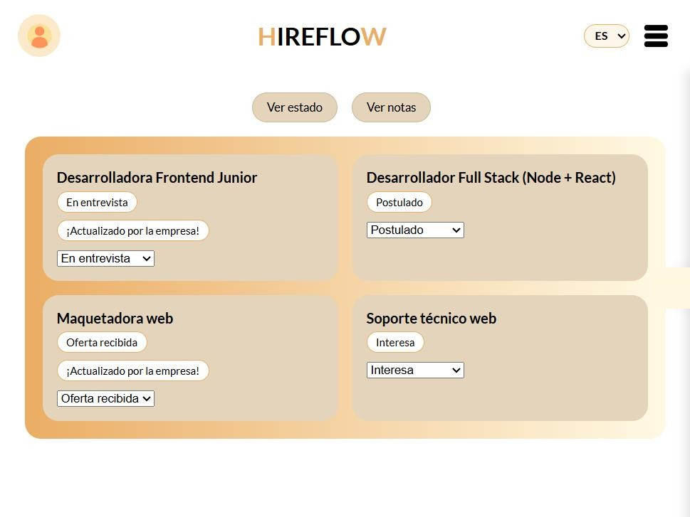
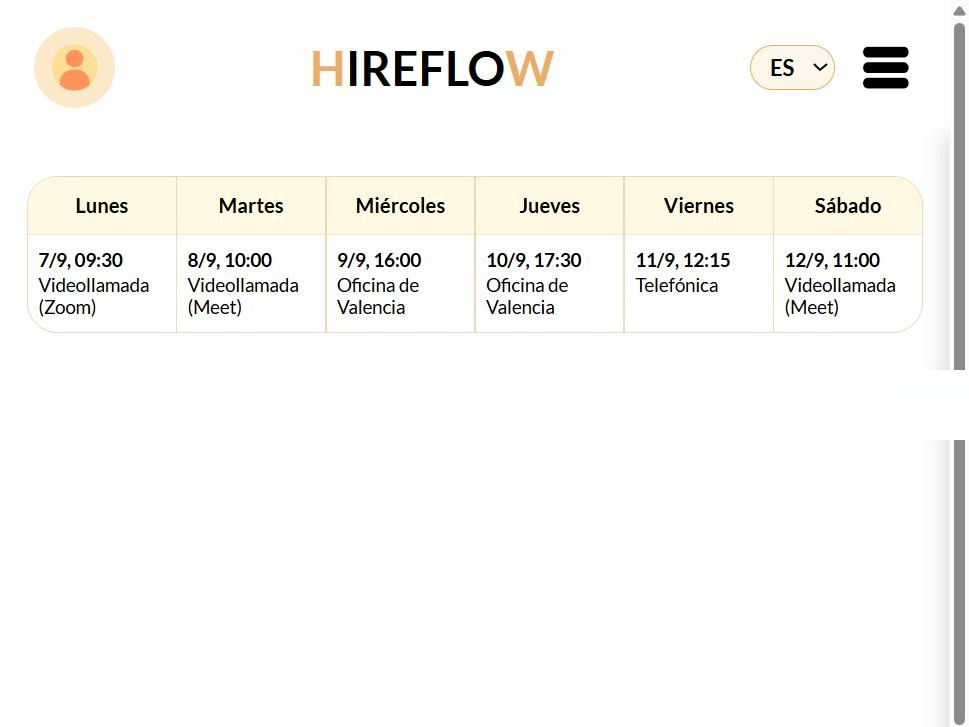

En desarrolloHireFlow
Organiza tu camino al empleo ideal.
Aplicación full stack para gestionar la búsqueda de empleo: postulaciones, entrevistas, contactos y calendario en un único panel. Incluye una API REST en Node.js con Express y una base de datos MySQL con esquema relacional, datos de prueba y colección de Postman para probar los endpoints.
- Node.js
- Express
- MySQL
- JavaScript ES6
- Postman
Modelado de la base de datos desde cero: usuarios (candidato y empresa),
ofertas, entrevistas y eventos, con schema.sql y seedData.sql
reproducibles.



